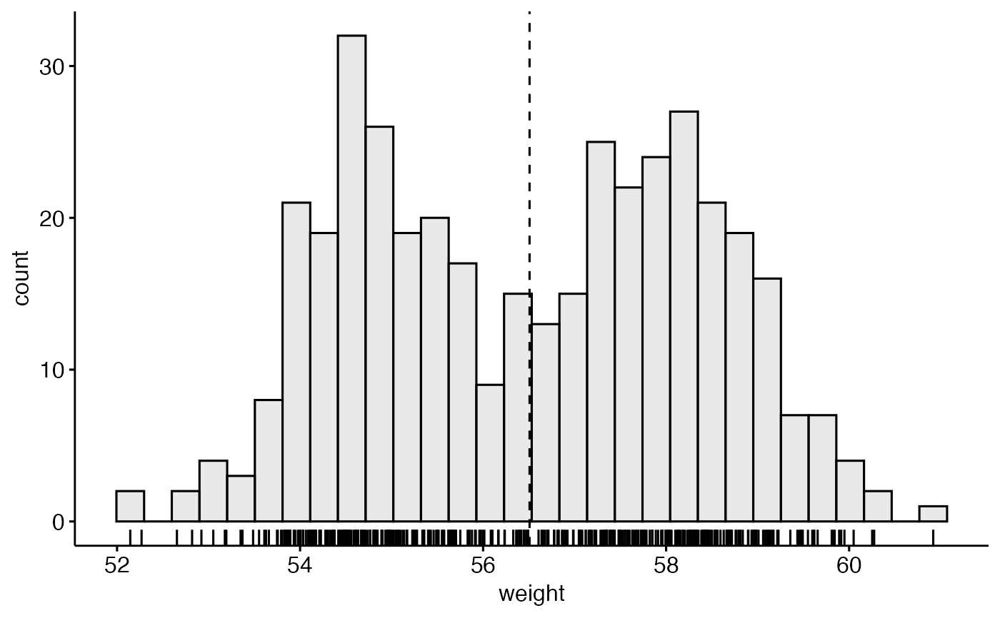
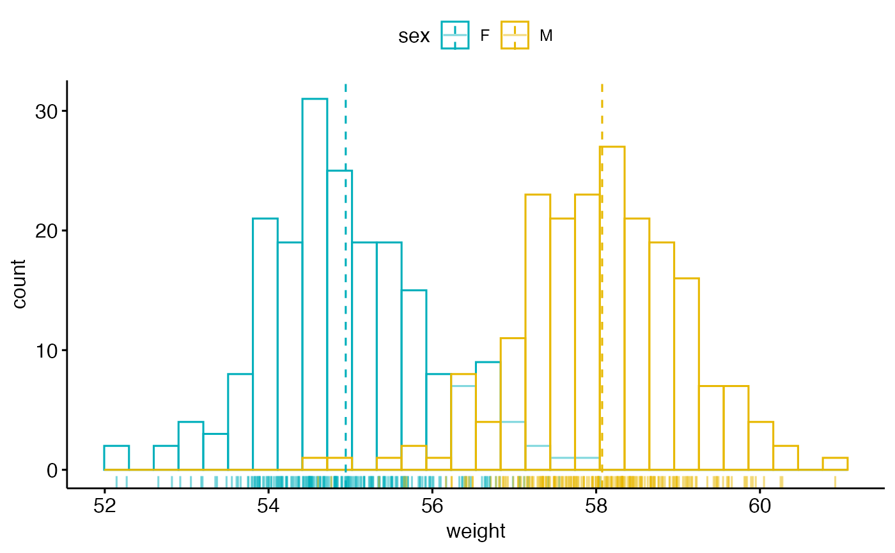
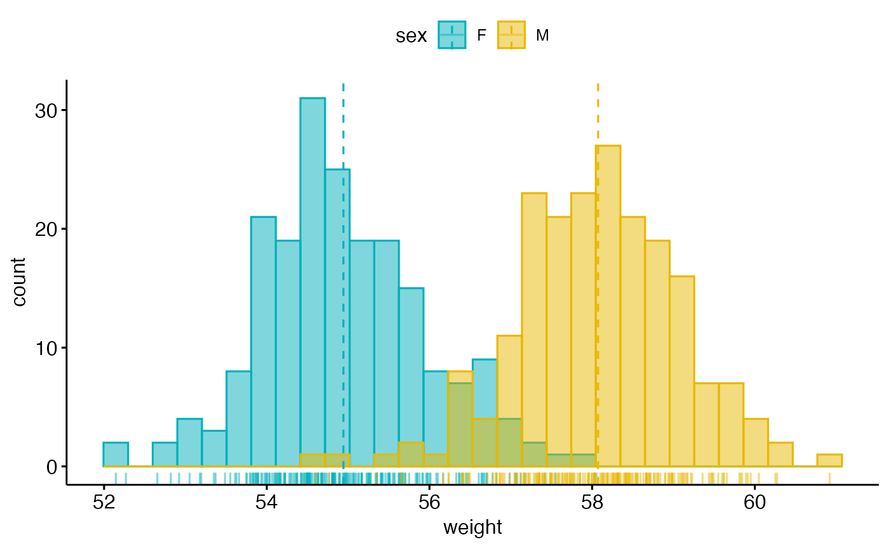
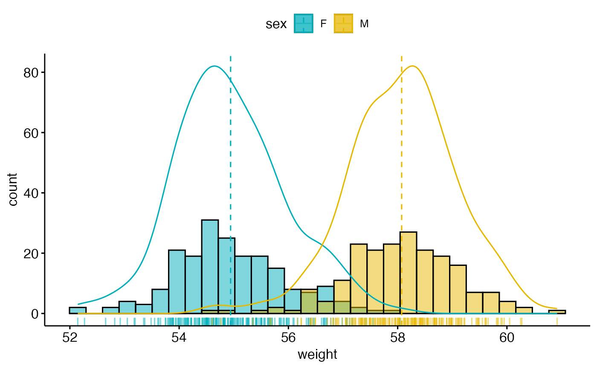
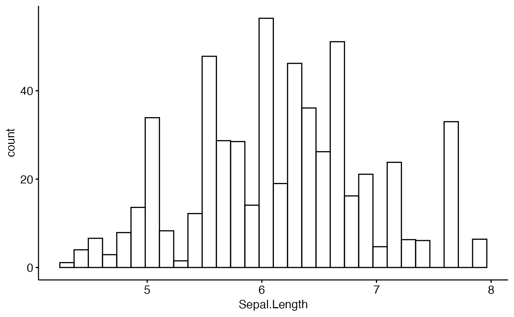

Create a histogram plot.
Usage
gghistogram(
data,
x,
y = "count",
combine = FALSE,
merge = FALSE,
weight = NULL,
color = "black",
fill = NA,
palette = NULL,
size = NULL,
linetype = "solid",
linewidth = NULL,
alpha = 0.5,
bins = NULL,
binwidth = NULL,
title = NULL,
xlab = NULL,
ylab = NULL,
facet.by = NULL,
panel.labs = NULL,
short.panel.labs = TRUE,
add = c("none", "mean", "median"),
add.params = list(linetype = "dashed"),
rug = FALSE,
add_density = FALSE,
label = NULL,
font.label = list(size = 11, color = "black"),
label.select = NULL,
repel = FALSE,
label.rectangle = FALSE,
position = position_identity(),
ggtheme = theme_pubr(),
...
)Arguments
- data
a data frame
- x
variable to be drawn.
- y
one of "density" or "count".
- combine
logical value. Default is FALSE. Used only when y is a vector containing multiple variables to plot. If TRUE, create a multi-panel plot by combining the plot of y variables.
- merge
logical or character value. Default is FALSE. Used only when y is a vector containing multiple variables to plot. If TRUE, merge multiple y variables in the same plotting area. Allowed values include also "asis" (TRUE) and "flip". If merge = "flip", then y variables are used as x tick labels and the x variable is used as grouping variable.
- weight
a variable name available in the input data for creating a weighted histogram.
- color, fill
histogram line color and fill color.
- palette
the color palette to be used for coloring or filling by groups. Allowed values include "grey" for grey color palettes; brewer palettes e.g. "RdBu", "Blues", ...; or custom color palette e.g. c("blue", "red"); and scientific journal palettes from ggsci R package, e.g.: "npg", "aaas", "lancet", "jco", "ucscgb", "uchicago", "simpsons" and "rickandmorty".
- size
Numeric value (e.g.: size = 1). change the size of points and outlines.
- linetype
line type. See
show_line_types.- linewidth
numeric value specifying the line width.
- alpha
numeric value specifying fill color transparency. Value should be in [0, 1], where 0 is full transparency and 1 is no transparency.
- bins
Number of bins. Defaults to 30.
- binwidth
numeric value specifying bin width. use value between 0 and 1 when you have a strong dense dotplot. For example binwidth = 0.2.
- title
plot main title.
- xlab
character vector specifying x axis labels. Use xlab = FALSE to hide xlab.
- ylab
character vector specifying y axis labels. Use ylab = FALSE to hide ylab.
- facet.by
character vector, of length 1 or 2, specifying grouping variables for faceting the plot into multiple panels. Should be in the data.
- panel.labs
a list of one or two character vectors to modify facet panel labels. For example, panel.labs = list(sex = c("Male", "Female")) specifies the labels for the "sex" variable. For two grouping variables, you can use for example panel.labs = list(sex = c("Male", "Female"), rx = c("Obs", "Lev", "Lev2") ).
- short.panel.labs
logical value. Default is TRUE. If TRUE, create short labels for panels by omitting variable names; in other words panels will be labelled only by variable grouping levels.
- add
allowed values are one of "mean" or "median" (for adding mean or median line, respectively).
- add.params
parameters (color, size, linetype) for the argument 'add'; e.g.: add.params = list(color = "red").
- rug
logical value. If TRUE, add marginal rug.
- add_density
logical value. If TRUE, add density curves.
- label
the name of the column containing point labels. Can be also a character vector with length = nrow(data).
- font.label
a list which can contain the combination of the following elements: the size (e.g.: 14), the style (e.g.: "plain", "bold", "italic", "bold.italic") and the color (e.g.: "red") of labels. For example font.label = list(size = 14, face = "bold", color ="red"). To specify only the size and the style, use font.label = list(size = 14, face = "plain").
- label.select
can be of two formats:
a character vector specifying some labels to show.
a list containing one or the combination of the following components:
top.upandtop.down: to display the labels of the top up/down points. For example,label.select = list(top.up = 10, top.down = 4).criteria: to filter, for example, by x and y variabes values, use this:label.select = list(criteria = "`y` > 2 & `y` < 5 & `x` %in% c('A', 'B')").
- repel
a logical value, whether to use ggrepel to avoid overplotting text labels or not.
- label.rectangle
logical value. If TRUE, add rectangle underneath the text, making it easier to read.
- position
Position adjustment, either as a string, or the result of a call to a position adjustment function. Allowed values include "identity", "stack", "dodge".
- ggtheme
function, ggplot2 theme name. Default value is theme_pubr(). Allowed values include ggplot2 official themes: theme_gray(), theme_bw(), theme_minimal(), theme_classic(), theme_void(), ....
- ...
other arguments to be passed to
geom_histogramandggpar.
Details
The plot can be easily customized using the function ggpar(). Read ?ggpar for changing:
main title and axis labels: main, xlab, ylab
axis limits: xlim, ylim (e.g.: ylim = c(0, 30))
axis scales: xscale, yscale (e.g.: yscale = "log2")
color palettes: palette = "Dark2" or palette = c("gray", "blue", "red")
legend title, labels and position: legend = "right"
plot orientation : orientation = c("vertical", "horizontal", "reverse")
Examples
# Create some data format
set.seed(1234)
wdata <- data.frame(
sex = factor(rep(c("F", "M"), each = 200)),
weight = c(rnorm(200, 55), rnorm(200, 58))
)
head(wdata, 4)
#> sex weight
#> 1 F 53.79293
#> 2 F 55.27743
#> 3 F 56.08444
#> 4 F 52.65430
# Basic density plot
# Add mean line and marginal rug
gghistogram(wdata,
x = "weight", fill = "lightgray",
add = "mean", rug = TRUE
)
#> Warning: Ignoring empty aesthetic: `size`.

# Change outline colors by groups ("sex")
# Use custom color palette
gghistogram(wdata,
x = "weight",
add = "mean", rug = TRUE,
color = "sex", palette = c("#00AFBB", "#E7B800")
)

# Change outline and fill colors by groups ("sex")
# Use custom color palette
gghistogram(wdata,
x = "weight",
add = "mean", rug = TRUE,
color = "sex", fill = "sex",
palette = c("#00AFBB", "#E7B800")
)

# Combine histogram and density plots
gghistogram(wdata,
x = "weight",
add = "mean", rug = TRUE,
fill = "sex", palette = c("#00AFBB", "#E7B800"),
add_density = TRUE
)

# Weighted histogram
gghistogram(iris, x = "Sepal.Length", weight = "Petal.Length")
